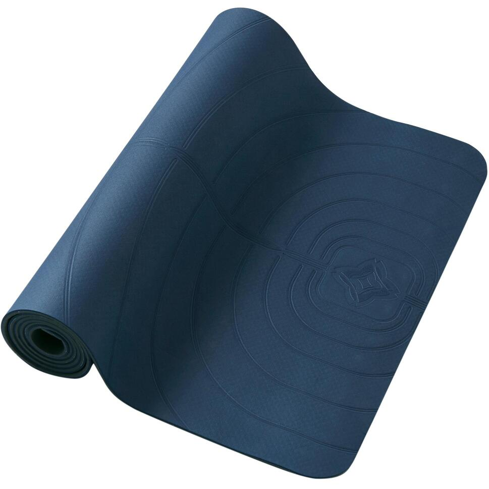

Product informatie YOGAMAT 5 MM ZACHTE YOGA DONKERBLAUW
Foto YOGAMAT 5 MM ZACHTE YOGA DONKERBLAUW
€ 85Eigenschappen
- Merk: KIMJALY
- Materiaal: Schuimplastic
- Gewicht: 820 G
- Kleur: Navyblauw
- Afmetingen : L 185 CM, B 61 CM, D 5 MM
- Garantie(jaar) : 2
Omschrijving
Licht matje dat aanvoelt als fluweel, gemakkelijk mee te nemen naar iedere yogales. Dit matje is zo zacht dat het uitnodigt om regelmatig aan yoga te doen. Het is licht, dus makkelijk mee te nemen naar de studio. De discrete markeringen helpen om de juiste houding aan te nemen.